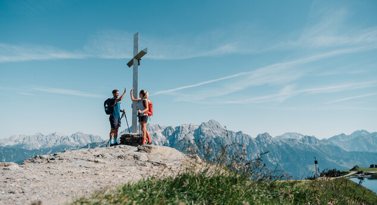
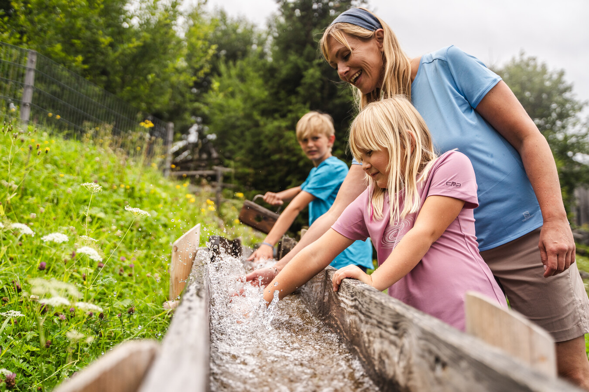
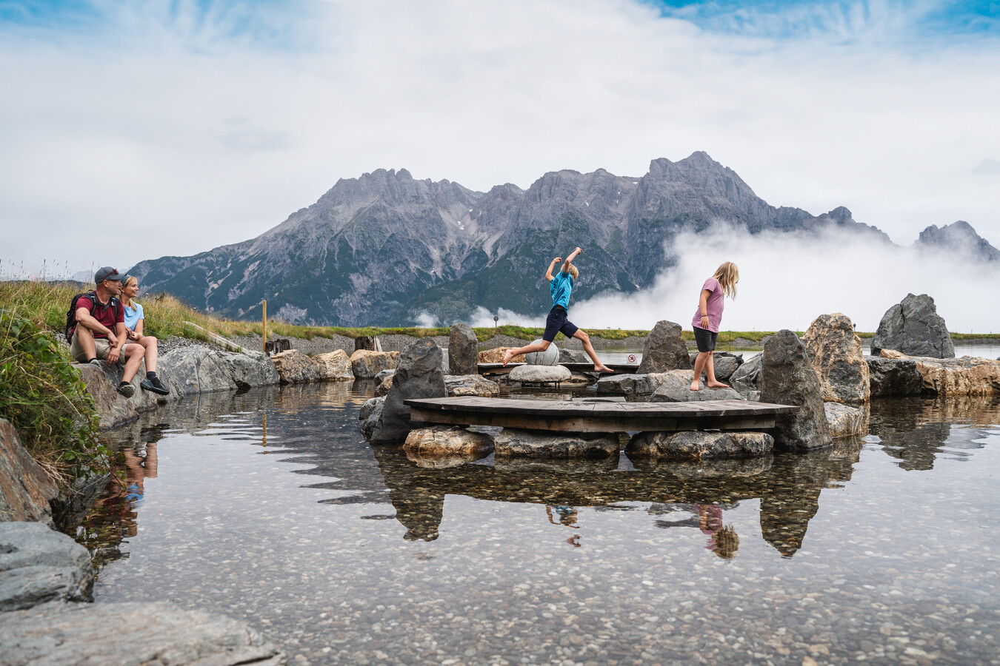
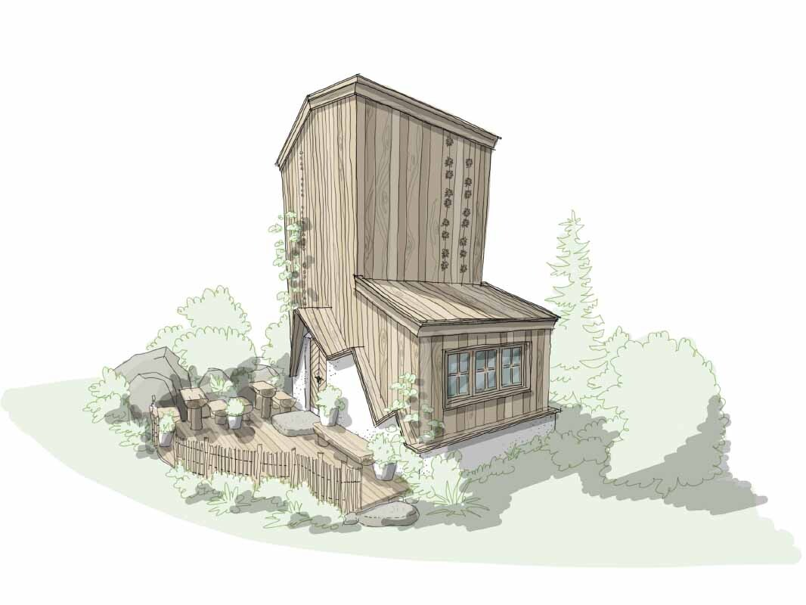
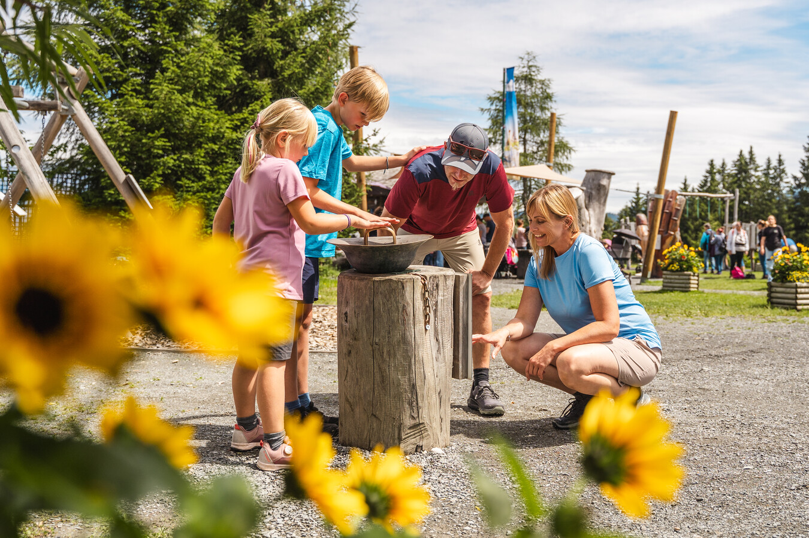
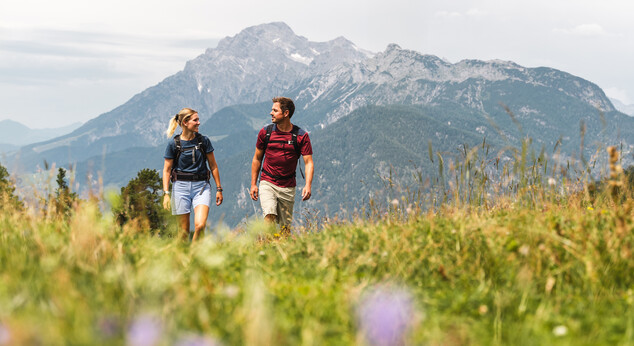
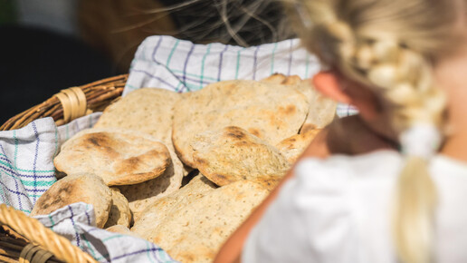

Per registered guest, per day. One ascent plus its descent is one return ride.

Forsthofgut field guide · September 15, 2026
What is actually
up the gondola?
A visual decoder for the included lifts, the unfamiliar activity names and what is worth doing with Rue.
Open the activity guide ↓About 200 m from the hotel; currently operating daily.
Plan to begin descending around 4:00.
Its daily season ended September 13.
The simple version
Take Asitzbahn to the middle station first.
Scan the Saalfelden Leogang Card from reception. Explore the Senses Park, then ride the second gondola section to the summit for views and a short walk. The installations and trails below are generally free once you are up; food, rentals, special programs and adventure products cost extra.
Tap any card
Every activity, translated.
Each panel shows what the name means, where it is and whether it works with a one-year-old.

Middle station · includedSenses Park30+ small hands-on nature and sensory stations.
This is not a traditional amusement park. It is a landscaped outdoor play area where children touch, listen, balance, smell and experiment with water and natural materials. It is the easiest centerpiece for a family gondola day.
- Rue: Good—she can toddle, touch and watch, with close supervision.
- Time: About 45–90 minutes.
- Cost: Free; gondola covered by your card.

Middle station · includedLeo’s Water WorldChannels, pumps and shallow water play.
A hands-on water area inside Senses Park rather than a swimming pool. Children move water through channels and play around shallow features; bring a change of socks or pants.
- Rue: Very good, but expect wet hands and clothing.
- Cost: Free.
Middle station · includedKneipp pool + barefoot trailA quick cold-water circulation and texture experience.
The Kneipp section is a shallow cold-water basin designed for slowly walking through. The neighboring barefoot path lets you step over materials such as wood, stone or grass and notice the different textures.
- Rue: Let her briefly touch or dip her feet; do not leave a baby standing in cold water.
- Cost: Free.

Middle station · park freeHerb House + alpine-plant trailA small botanical stop about useful local mountain plants.
The new Herb House and garden introduce alpine herbs through scent, touch and interpretation. Simply visiting is free. Scheduled TEH herb workshops add a guided, make-and-take experience and may require registration or payment.
- Rue: Stroller/carrier friendly as a short stop; prevent tasting plants.
- Free: House and trail.
- Possible extra: Guided workshop.

Near middle station · includedPeaceful WaterA landscaped pond and quiet place to sit—not another attraction line.
“Stille Wasser” is a calm reservoir-side relaxation area with views and places to pause. Think picnic, feet up and mountain scenery rather than an organized activity.
- Rue: Good decompression stop; supervise closely near water.
- Cost: Free.
Walking trail · includedNature CinemaOutdoor seating pointed at the real mountain panorama.
No screen and no scheduled movie: the landscape is the film. Wooden loungers face the Leogang mountains, making this a scenic rest destination on a walk.
- Rue: Excellent carrier stop and family-photo location.
- Cost: Free.
Forest walk · includedTONspur IslandsFive listening stations hidden along the forest trail.
Small wooden listening islands let you sit in the woods and hear music recorded at concerts on the mountain. They are atmospheric rest stops along a walk, not separate performances.
- Rue: Fine in a carrier; interest depends on mood.
- Cost: Free.

Forest trail · includedForest bathingA slow mindfulness walk—not literal bathing.
Forest bathing means walking slowly, breathing and deliberately noticing sounds, smells and textures. You can do it independently; an organized guided session is a separate scheduled program.
- Rue: Best in the carrier during nap time.
- Free: Self-guided trail.
- Possible extra: Guided session.
Walking route · includedArt Hiking TrailOutdoor artworks positioned along a real mountain walk.
A hiking path punctuated by changing art installations. The art gives adults a reason to stop, but this remains an outdoor trail—use a carrier rather than expecting smooth stroller terrain.
- Rue: Carrier recommended.
- Cost: Free.
Family trail · includedLeo’s Game Trail + puzzle huntPlay stations and a printed riddle sheet along a walk.
The Game Trail mixes walking with play stops. Older children can collect a puzzle card at a lift station and solve clues; with Rue, the play structures and scenery matter more than the riddle.
- Rue: Some visual/play interest, though designed for older children.
- Cost: Trail and puzzle card are free.

Scheduled program · check registrationFlatbread bakingA supervised demonstration where children grind grain and bake bread.
Held at 1:30 p.m. on scheduled Tuesdays, Thursdays and Sundays during the published season. Children grind grain, knead dough and bake simple flatbread.
- Rue: Too young to participate meaningfully, but she can watch.
- Cost: Confirm at the lift desk; scheduled programs can have capacity or registration rules.
Top station · includedSummit walks + viewpointsThe payoff: open alpine scenery above the play area.
Continue from the middle station to the top for broad views and signed hiking routes. You do not need to attempt a major hike: a short out-and-back near the station still provides the mountain experience.
- Rue: Carrier recommended; bring a layer because the summit is cooler and windier.
- Cost: Trails free; your return gondola ride covers transport.
 Valley + mountain · equipment paidEpic Bikepark LeogangLift-served downhill trails—not casual baby-friendly cycling.
Valley + mountain · equipment paidEpic Bikepark LeogangLift-served downhill trails—not casual baby-friendly cycling.
Purpose-built downhill and flow trails use the gondola for repeated laps. Your guest card includes eligible gondola rides and bike transport, but rentals, protective equipment, instruction and rides beyond the daily allowance cost extra.
- Rue: Not suitable as a passenger; one parent would need to stay with her.
- Paid: Bike/equipment, lessons and additional lift access.
Separate adventure · paidFlying Fox XXLA very long, fast zipline flight down the mountain.
This is a major zipline experience, not a small playground ride. In the current September period it operates Friday–Sunday, weather permitting. The published onsite adult price is €99; the package includes equipment, its gondola ascent, the flight and return transport.
- Rue: Not eligible.
- Paid: Completely separate ticket; advance booking recommended.
Use the second ride elsewhere
Other included gondola choices.
Kohlmaisbahn
Best second family choice. Montelino adventure trail, wildlife-feeding area and water playground in Saalbach.
Schattberg X-press
Best dramatic panorama. Reaches 2,020 m, with a summit playground and the start of serious ridge hikes.
12er KOGEL
Hinterglemm access with high-alpine views and hiking; less compelling than Kohlmais for a baby-focused day.
Westgipfelbahn
Big mountain scenery and hiking/bike connections. Better for adults seeking terrain than toddler play.
Hochalmbahn
A quieter hiking-oriented ascent in Hinterglemm. No bike transport on this particular lift.
Not included: Fieberbrunn’s Streuböden gondola is open, but it is outside the two-free-ride benefit. The Biberg chairlift is separately included without limit, while its summer toboggan run costs extra.
Our pick
Do Asitz slowly.
Middle station → Senses Park and water play → lunch or snack → top station for the panorama → one short carrier walk → descend by 4:00. That is enough variety without turning the day into a checklist.
Live references
Saalfelden Leogang Card terms ↗Leogang lift hours ↗Senses Park ↗Saalbach lift status ↗Flying Fox schedule and prices ↗Checked September 15, 2026. Lift operations remain weather-dependent. Images are drawn from official Saalfelden Leogang tourism materials and the existing hotel research set.